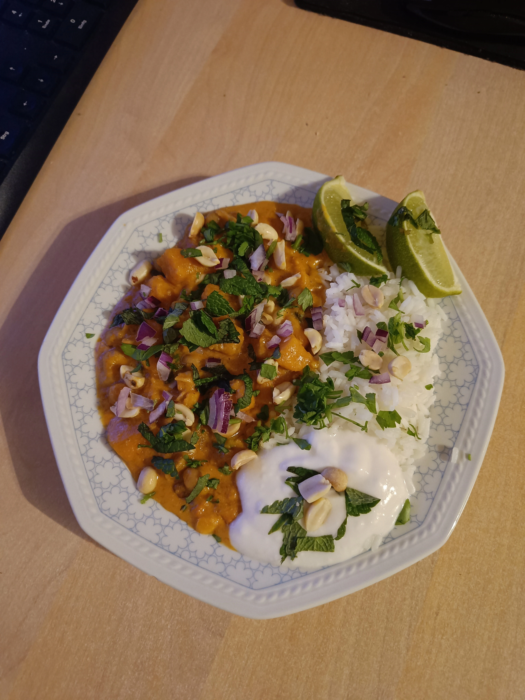

Home
Vegan Red Thai Curry

Creamy Red Thai Curry with Rice and Toppings
No matter what time of year it is, this
creamy vegan red Thai curry with rice is always a treat.
You can always adjust the exact ingredients to suit the vegetable season, e.g., with pumpkin and potatoes.
You can also give your creativity free rein when it comes to the topping. The picture shows the curry
with rice and a topping of cold coconut yogurt, fresh red onions, fresh mint, two lime quarters, and roasted peanuts.